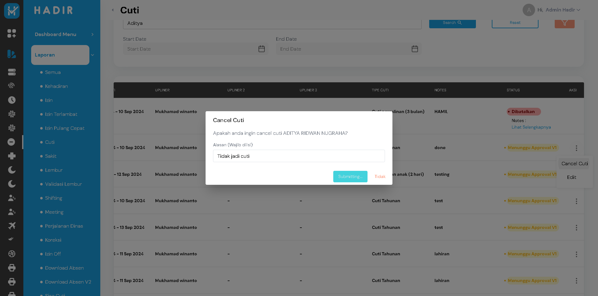

-
Laporan Cuti Functionality
09.22.38 / 00:00:14:135 Fail
Laporan Cuti Functionality
04.29.2026 09.22.38 04.29.2026 09.22.52 00:00:14:135 · #test-id=1PassFilter laporan cuti by date range successfullyGiven the user is on the login pageWhen the user enters valid email and passwordAnd clicks the login buttonThen the user should be redirected to the dashboard pageAnd the page header should display Logo HadirAnd the user navigates to the Laporan menuThen the user selects the Cuti submenuWhen the user selects date range from "1" to "28"And clicks the search buttonThen all table data should be within the date rangecom.juaracoding.kelompok1.utils.Hooks.tearDown(io.cucumber.java.Scenario)Evidence_Berhasil
FailFilter laporan cuti by name successfullyGiven the user is on the login pageWhen the user enters valid email and passwordStep skippedAnd clicks the login buttonStep skippedThen the user should be redirected to the dashboard pageStep skippedAnd the page header should display Logo HadirStep skippedAnd the user navigates to the Laporan menuStep skippedThen the user selects the Cuti submenuStep skippedWhen the user enters name "silva" in the search fieldStep skippedAnd clicks the search buttonStep skippedThen all table data should match the nameStep skippedcom.juaracoding.kelompok1.utils.Hooks.tearDown(io.cucumber.java.Scenario)FailFilter laporan cuti by department using filter buttonGiven the user is on the login pageWhen the user enters valid email and passwordStep skippedAnd clicks the login buttonStep skippedThen the user should be redirected to the dashboard pageStep skippedAnd the page header should display Logo HadirStep skippedAnd the user navigates to the Laporan menuStep skippedThen the user selects the Cuti submenuStep skippedWhen the user clicks the filter buttonStep skippedAnd enters department "Recruitment" in the department search fieldStep skippedAnd clicks the terapkan buttonStep skippedAnd clicks the search buttonStep skippedThen the user should see the list of reportsStep skippedcom.juaracoding.kelompok1.utils.Hooks.tearDown(io.cucumber.java.Scenario)FailReset search filterGiven the user is on the login pageWhen the user enters valid email and passwordStep skippedAnd clicks the login buttonStep skippedThen the user should be redirected to the dashboard pageStep skippedAnd the page header should display Logo HadirStep skippedAnd the user navigates to the Laporan menuStep skippedThen the user selects the Cuti submenuStep skippedWhen the user enters name "Testing Data" in the search fieldStep skippedWhen the user clicks the reset buttonStep skippedThen the search name field should be emptyStep skippedcom.juaracoding.kelompok1.utils.Hooks.tearDown(io.cucumber.java.Scenario)FailFilter laporan cuti by wrong name and verify table is emptyGiven the user is on the login pageWhen the user enters valid email and passwordStep skippedAnd clicks the login buttonStep skippedThen the user should be redirected to the dashboard pageStep skippedAnd the page header should display Logo HadirStep skippedAnd the user navigates to the Laporan menuStep skippedThen the user selects the Cuti submenuStep skippedWhen the user enters name "Buffon" in the search fieldStep skippedAnd clicks the search buttonStep skippedThen the table should be emptyStep skippedcom.juaracoding.kelompok1.utils.Hooks.tearDown(io.cucumber.java.Scenario)
-
org.openqa.selenium.NoSuchWindowException
7 tests
org.openqa.selenium.NoSuchWindowException
7 failedStatus Timestamp TestName Fail 09:22:52 am com.juaracoding.kelompok1.utils.Hooks.tearDown(io.cucumber.java.Scenario) Laporan Cuti Functionality.Filter laporan cuti by name successfully.com.juaracoding.kelompok1.utils.Hooks.tearDown(io.cucumber.java.Scenario)Fail 09:22:52 am Given the user is on the login page Laporan Cuti Functionality.Filter laporan cuti by department using filter button.Given the user is on the login pageFail 09:22:52 am com.juaracoding.kelompok1.utils.Hooks.tearDown(io.cucumber.java.Scenario) Laporan Cuti Functionality.Filter laporan cuti by department using filter button.com.juaracoding.kelompok1.utils.Hooks.tearDown(io.cucumber.java.Scenario)Fail 09:22:52 am Given the user is on the login page Laporan Cuti Functionality.Reset search filter.Given the user is on the login pageFail 09:22:52 am com.juaracoding.kelompok1.utils.Hooks.tearDown(io.cucumber.java.Scenario) Laporan Cuti Functionality.Reset search filter.com.juaracoding.kelompok1.utils.Hooks.tearDown(io.cucumber.java.Scenario)Fail 09:22:52 am Given the user is on the login page Laporan Cuti Functionality.Filter laporan cuti by wrong name and verify table is empty.Given the user is on the login pageFail 09:22:52 am com.juaracoding.kelompok1.utils.Hooks.tearDown(io.cucumber.java.Scenario) Laporan Cuti Functionality.Filter laporan cuti by wrong name and verify table is empty.com.juaracoding.kelompok1.utils.Hooks.tearDown(io.cucumber.java.Scenario) -
org.openqa.selenium.WebDriverException
1 tests
org.openqa.selenium.WebDriverException
1 failedStatus Timestamp TestName Fail 09:22:52 am Given the user is on the login page Laporan Cuti Functionality.Filter laporan cuti by name successfully.Given the user is on the login page
-
@SIT
5 tests
@SIT
1 passed 4 failedStatus Timestamp TestName Pass 09:22:38 am Filter laporan cuti by date range successfully Laporan Cuti Functionality.Filter laporan cuti by date range successfullyFail 09:22:51 am Filter laporan cuti by name successfully Laporan Cuti Functionality.Filter laporan cuti by name successfullyFail 09:22:52 am Filter laporan cuti by department using filter button Laporan Cuti Functionality.Filter laporan cuti by department using filter buttonFail 09:22:52 am Reset search filter Laporan Cuti Functionality.Reset search filterFail 09:22:52 am Filter laporan cuti by wrong name and verify table is empty Laporan Cuti Functionality.Filter laporan cuti by wrong name and verify table is empty -
@LaporanCuti
5 tests
@LaporanCuti
1 passed 4 failedStatus Timestamp TestName Pass 09:22:38 am Filter laporan cuti by date range successfully Laporan Cuti Functionality.Filter laporan cuti by date range successfullyFail 09:22:51 am Filter laporan cuti by name successfully Laporan Cuti Functionality.Filter laporan cuti by name successfullyFail 09:22:52 am Filter laporan cuti by department using filter button Laporan Cuti Functionality.Filter laporan cuti by department using filter buttonFail 09:22:52 am Reset search filter Laporan Cuti Functionality.Reset search filterFail 09:22:52 am Filter laporan cuti by wrong name and verify table is empty Laporan Cuti Functionality.Filter laporan cuti by wrong name and verify table is empty
Started
Apr 29, 2026 09:22:37 am
Ended
Apr 29, 2026 09:22:52 am
Features Passed
0
Features Failed
1
Features
Scenarios
Steps
Timeline
Tags
| Name | Passed | Failed | Skipped | Others | Passed % |
|---|---|---|---|---|---|
| @SIT | 1 | 4 | 0 | 0 | 20% |
| @LaporanCuti | 1 | 4 | 0 | 0 | 20% |